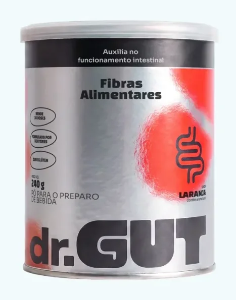
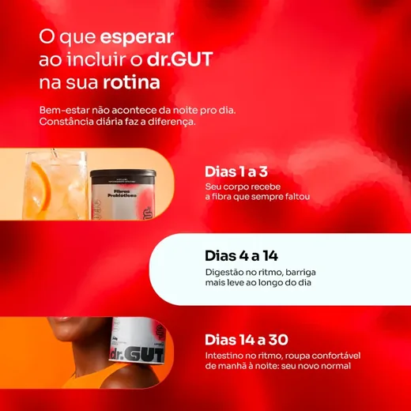

4,9 · aprovado por 7.500 clientes*
6 motivos por que tanta gente está trocando o laxante por um copo de dr.GUT de manhã

Você já bebe água. Já come salada. Já tentou chá, mamão, ameixa e aquele pó da farmácia. Melhora um dia. No terceiro, o laxante volta pra gaveta. Não é falta de esforço: tudo isso empurra. Nada alimenta o intestino.
- 5,8 g de fibra por dose
- Garantia de 30 dias
- Sem laxante, sem cafeína
- Formulado por doutores
Laxante faz o trabalho no lugar do seu intestino
Ele resolve hoje porque força por fora. Mas não entrega ao seu intestino nada do que faltava. Por isso, três dias depois, tudo volta. E muita gente sente que precisa de um pouco mais a cada mês.
Repara se o seu ciclo não é assim:
- Dia 1Nada.
- Dia 2Barriga dura, estufada. À noite a roupa aperta.
- Dia 3O laxante.
- Dia 4Cólica, pressa, manhã inteira perto de casa.
- Dia 5Tudo de novo.
Não é assim mesmo. Você só está tratando o sintoma.
Garantia de 30 dias · Até 30% OFF no kit
Água e salada cuidam do que passa. Ninguém alimentou as bactérias.
Seu intestino não funciona na base da força. Ele funciona quando as bactérias boas que vivem nele estão bem alimentadas. E a comida delas tem nome: fibra prebiótica.
O problema é que fibra se mede em gramas, e a conta não fecha. O brasileiro come em média 15 g de fibra por dia. O corpo pede 25 a 30 g.
O que o brasileiro come
O que o corpo pede
Uma dose de dr.GUT
É por isso que dá pra fazer tudo certo e continuar indo de dois em dois dias, quando vai. Uma dose cobre 5,8 g desse buraco. Não fecha sozinha, e a gente não vai dizer que fecha. Mas é a parte que ninguém estava cobrindo.
Você já fez a sua parte. Faltava alimentar quem faz o trabalho.
Garantia de 30 dias · Até 30% OFF no kit
3 fibras com funções diferentes, 5,8 g de verdade, em 1 dose

"3 fibras" parece propaganda. Por isso, aqui está o que cada uma faz:
- 1
PolidextroseDá volume e maciez ao trânsito intestinal. É a que faz o bolo andar sem esforço.
- 2
Inulina de chicóriaA prebiótica clássica, alimento preferido das bactérias boas. É ela que reequilibra a fermentação, e a barriga para de crescer ao longo do dia.
- 3
Goma guar parcialmente hidrolisadaSuave, dissolve sem virar gel. É a razão de você conseguir tomar todo dia, e não desistir na segunda semana.
E, como prato menor também quer dizer menos nutriente, cada dose traz 100% do valor diário de vitamina C, zinco e biotina e 50% de selênio. Tudo isso com 14 kcal e zero açúcar adicionado.
Volume sem alimento é peso parado. Alimento sem maciez é esforço. As três juntas, todo dia.
Garantia de 30 dias · Até 30% OFF no kit
Não força, não dá cólica e não tem dia certo pra tomar

Muito chá "natural" e muita cápsula que desincha têm laxante na fórmula, só com outro nome. Por isso vêm com efeito pra esperar e sábado pra reservar.
O dr.GUT não tem laxante, não tem cafeína e não tem nada que force. Você toma de manhã, na frente de quem for, e segue o dia. Nos primeiros dias o intestino cria ritmo. Entre o dia 4 e o 14, a barriga fica mais leve ao longo do dia. Até o dia 30, roupa confortável de manhã à noite.
Um aviso honesto: nos primeiros dias, algumas pessoas sentem um pouco mais de gases. É a fibra começando a agir, e passa. Comece com meia dose e aumente aos poucos.
★★★★★
"Eu inchava tanto que às 18h parecia grávida. Em 2 semanas isso acabou. Hoje minha barriga é leve o dia inteiro."
Renata Oliveira · Avaliação verificada no site
Garantia de 30 dias · Até 30% OFF no kit
1 dose. 1 copo. 30 segundos. Gosto de laranja, não de grama.

1200 ml de água bem gelada

21 dose (8 g) de dr.GUT

3Mexe, pronto, sai tomando
O pote de fibra vai pro fundo do armário porque tem gosto de castigo e textura de gosma. E o que você não toma, não funciona.
O dr.GUT dissolve na água em 30 segundos, sem empelotar, sem liquidificador. Sabor laranja de verdade, zero açúcar adicionado, adoçado com estévia, 14 kcal. Encaixa no café que você já toma. Sem lista pra cumprir, sem sistema pra montar e sem largar o arroz com feijão.
Garantia de 30 dias · Até 30% OFF no kit
Quem já testou explica melhor que a gente

- Aprovado por 7.500 clientes, nota 4,9 de 5*
- Formulado por doutores, cada ingrediente na dose certa
- Sem glúten, sem cafeína, zero açúcar adicionado
- Garantia incondicional de 30 dias, sem burocracia
Garantia de 30 dias · Até 30% OFF no kit
Quem trocou o laxante conta como foi
★★★★★
"Tipo reloginho"
Terceira semana e meu intestino descobriu que existe rotina. Eu era do time "2x por semana com sorte" e achava normal. Hoje é todo dia, de manhã. Nunca que eu ia imaginar que era só... fibra?
★★★★☆
"A mesma barriga das 8h"
O que mudou pra mim: chegar às 19h com a mesma barriga das 8h. Eu vivia estufada no fim do dia e jurava que era "meu normal". Umas 2 semanas de uso constante e a calça parou de me apertar de noite.
★★★★★
"Esse eu continuo tomando"
Comprei desconfiada porque já joguei dinheiro fora com uns 3 pós verdes. A diferença: esse aqui eu continuo tomando. Dissolve rápido, não tem gosma, e o gosto de laranja é gostoso de verdade. Já pedi o segundo pote.
O jeito mais simples de o seu intestino voltar a funcionar sozinho
- Garantia de 30 dias
- 5,8 g de fibra por dose
- Sem laxante, sem cafeína
- Formulado por doutores
4,9 · aprovado por 7.500 clientes*
Até 30% OFF no kit de 3. Teste por 30 dias sem risco.

1 lata
30 dias de uso
R$ 4,90 por dia
🎁 Frete grátis na 1ª compra com o cupom DRGUT

2 latas
R$ 123,50 cada
R$ 4,12 por dia · 60 dias

3 latas
R$ 112,33 cada
R$ 3,74 por dia · 90 dias
ou 3x de R$ 112,33 sem juros no cartão
No Pix: R$ 320,14 com 5% de desconto
Garantia incondicional de 30 dias. Não sentiu diferença, devolvemos 100%. Sem burocracia.
Até 3x sem juros. Frete grátis acima de R$ 247.
🎁 Primeira compra? Use o cupom DRGUT no checkout e ganhe frete grátis.
No kit de 3, o dr.GUT sai por R$ 3,74 por dia: uma dose de manhã e nenhum dia marcado na agenda.
Não é laxante e não é emagrecedor. Se você não pretende tomar todo dia por 30 dias, nem compra. Se cansou de ser a única da mesa que não consegue, começa hoje.
Seu pedido está protegido por 30 dias de garantia incondicionalSe você não sentiu diferença no seu trânsito intestinal em 30 dias de uso contínuo, devolvemos 100% do seu dinheiro. Sem burocracia, sem questionamento.